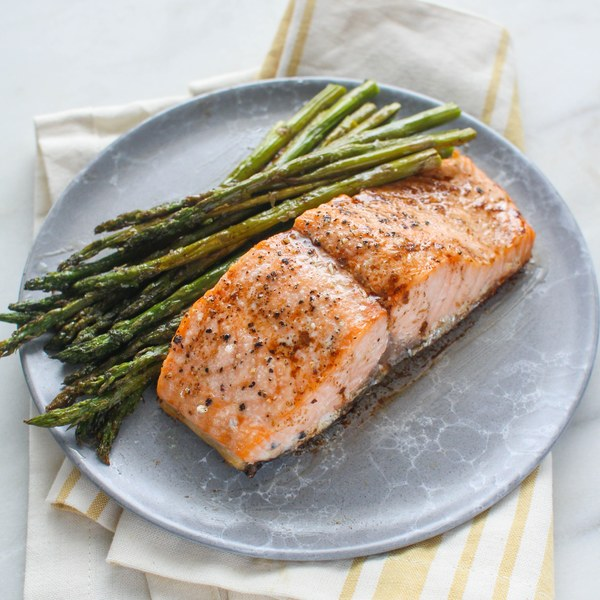

Roasted Salmon & Asparagus with Balsamic-Butter Sauce

A Buttery-Smooth Atlantic Dish
This meal consists of well-seasoned and buttered salmon fillets with a side of oven-roasted asparagus.
Cooking time should be around 40 minutes. This recipe accounts for 4 servings.
With rich and sweet flavors from the salad and the chicken, along with oven-baked aroma accompanying the dish, this meal will transport you straight to your grandma's kitchen!
Ingredients
- 2 small bunches of asparagus
- 4 cloves of garlic
- 1 ½ lb of salmon fillets
- balsamic vinegar
- salt
- black pepper
- extra virgin olive oil
- butter, unsalted
- soy sauce
Steps
- Preheat the oven to 425°F and position rack in the centre. Line a baking sheet with parchment paper.
- Peel and mince the garlic.
- Wash the asparagus and snap (or cut) off the woody ends. Transfer to the baking sheet.
Drizzle with olive oil and season with the minced garlic and salt and pepper; toss to coat.
Spread out in a single layer, leaving room for the salmon in the middle.
- Place the salmon fillets, skin-side down, in the middle of the baking sheet.
Rub with olive oil and season with salt and pepper.
- Place in the oven and bake until the salmon is opaque and the asparagus is tender, 10-15 minutes.
- In a small saucepan, melt the butter over medium heat. Let it brown slightly, then remove from heat.
Stir in the balsamic vinegar and soy sauce. Cover to keep warm.
- To serve, arrange asparagus on a plate and place the salmon on top. Spoon the balsamic-butter sauce over top. Enjoy!
Return home